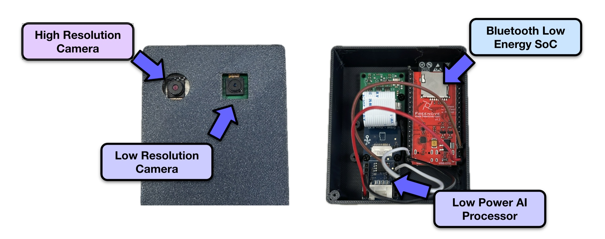
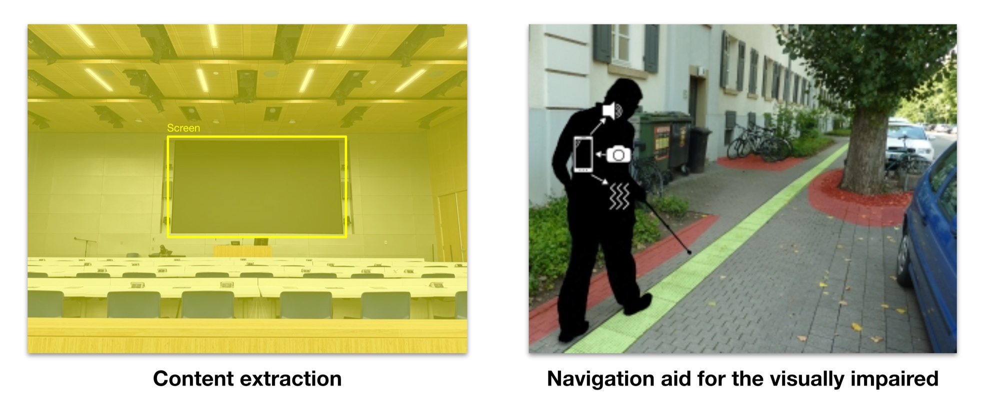
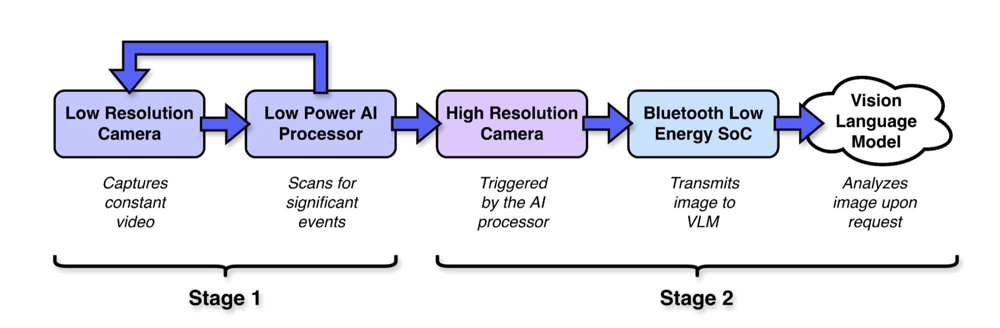
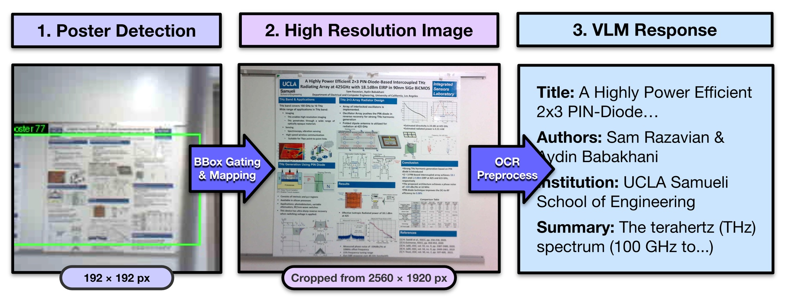
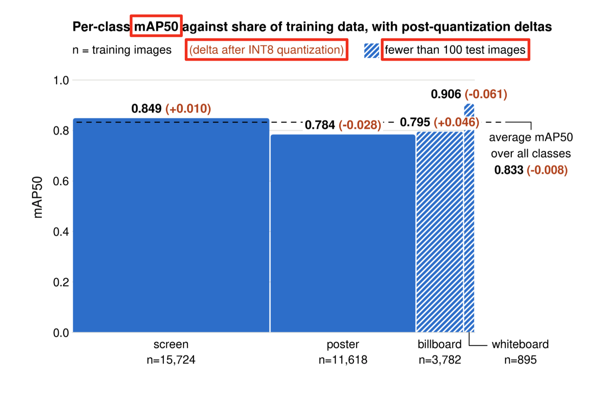
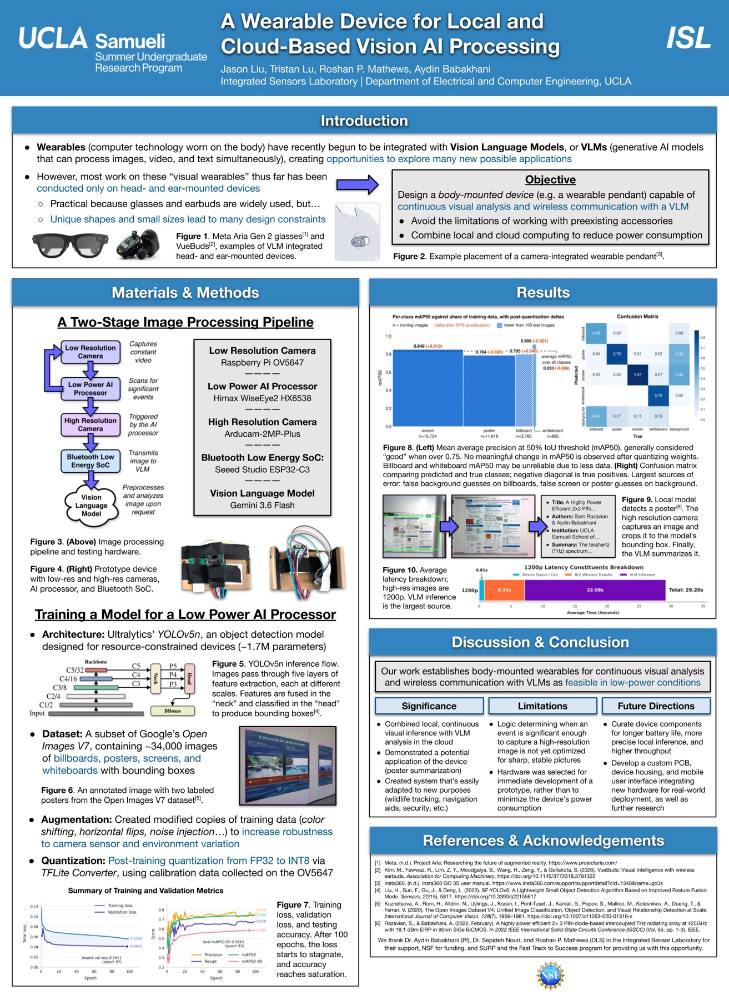

Completed · Jun – Aug 2026
Dual-camera edge-AI wearable
A wearable camera that runs object detection on a low-power chip and only sends an image to the cloud when it finds something worth describing.
I built this over the summer research program. The finished prototype detects posters, screens, billboards, and whiteboards, takes a high-resolution photo of the target, and sends the cropped image over Bluetooth to a phone app that uses Gemini to summarize it.

Background
Streaming high-resolution video from a wearable uses a lot of power and bandwidth, and most of those frames don’t contain anything useful. A wearable also has a small battery, and Bluetooth Low Energy can only move so much data.
So the idea was to keep a cheap detector running all the time, and only use the high-resolution camera, the radio, and the cloud when there’s actually a target in view.

How it works


What I did
- Built the two-camera pipeline. The Himax WiseEye 2 handles low-resolution detection, and an ESP32-S3 with an OV5640 takes the high-resolution photo and sends it over BLE.
- Trained a YOLOv5n detector (about 1.7 million parameters) in PyTorch on Open Images V7, then quantized it to INT8 so it fits on the Himax WE2 at about 1.7 MB.
- Calibrated the two cameras with an OpenCV homography, so a box from the low-resolution camera lines up with the right part of the OV5640 image.
- Tuned exposure, gain, and cropping to keep the images sent over BLE small.
- Ported an ArduCAM OV2640 SPI driver to Zephyr with the nRF Connect SDK, and measured the energy per image over BLE and Wi-Fi with a Power Profiler Kit II.
Design decisions
Quantizing the model
The detector runs on the Himax WE2 itself, so it had to be small. INT8 quantization brought YOLOv5n down to about 1.7 MB, and average mAP50 only dropped by 0.008.
Detecting locally, describing in the cloud
Low-resolution detection is cheap enough to run all the time. The high-resolution photo and the cloud request only happen once a target is confirmed.
Waiting for a stable detection
The trigger only fires if a target shows up in four of the last six detections, which filters out one-off false positives.
Sending only the crop
Instead of sending the whole 2560 × 1920 frame, the device sends just the region around the detected box, which keeps Bluetooth transfers short.
Results
Measured with a Power Profiler Kit II using an OV2640 camera. Sending an image over BLE took about 6.5 times less energy than Wi-Fi.


A debugging story
At one point the telemetry showed enough stable detections to trigger a capture, but the device never fired. The detector and trigger logic turned out to be fine. The firmware on the board was an older build that still had extra checks blocking the trigger.
It was a good reminder to check what’s actually running on the board before trusting the logs.
Where it ended
Working at the end of the program
- The full demo: detect, capture, crop, send over BLE, and summarize
- BLE at 0.37 J per image, compared with 2.41 J over Wi-Fi
- All the final hardware fitted in the enclosure
Not checked
- The Grove I²C link after later firmware changes